Neck & Clod
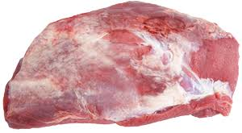Thick Rib
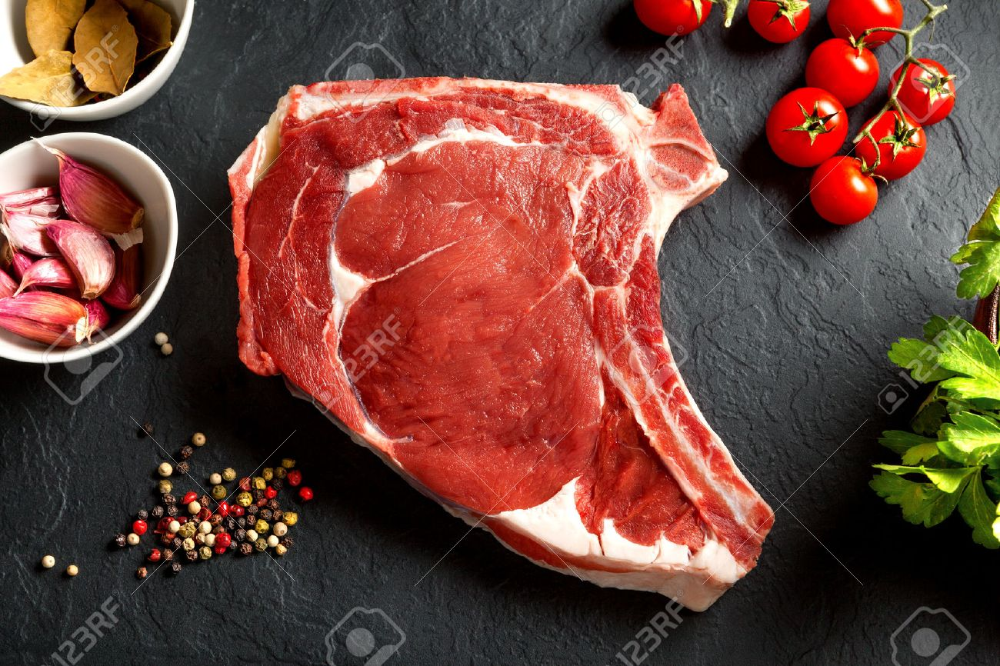Chuck & Blade
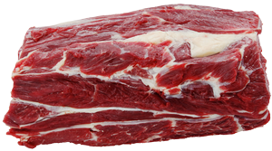Fore Rib
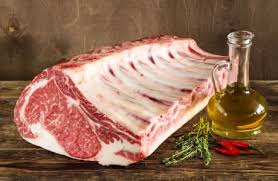Thin Rib
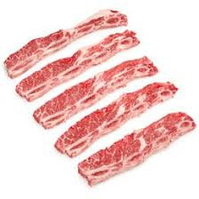Shin
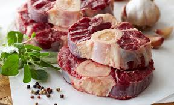Brisket
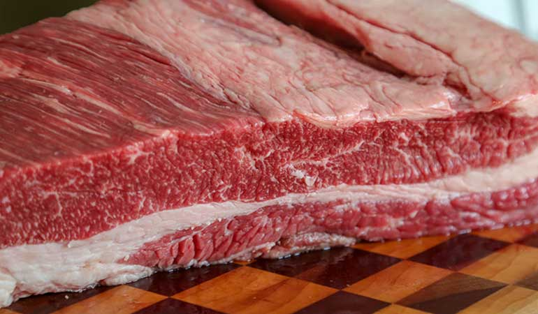Flank
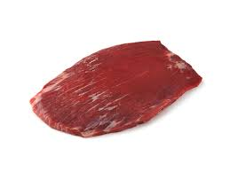Sirloin
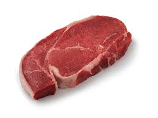Rump
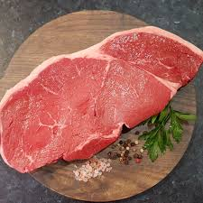Silverside
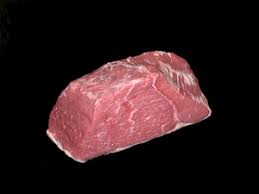Topside
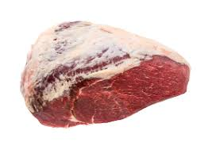Thick Flank
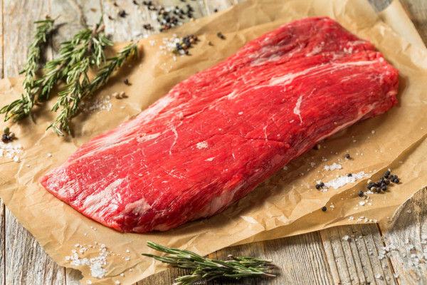Leg
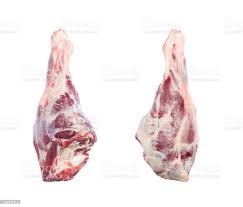Head
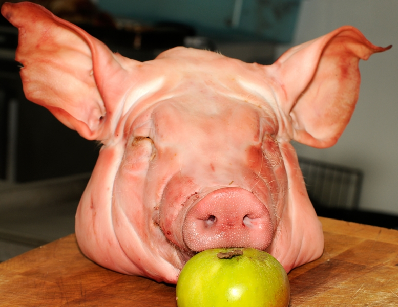Spare Rib Roast
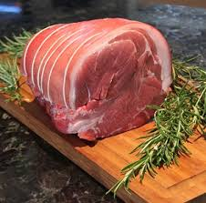Blade
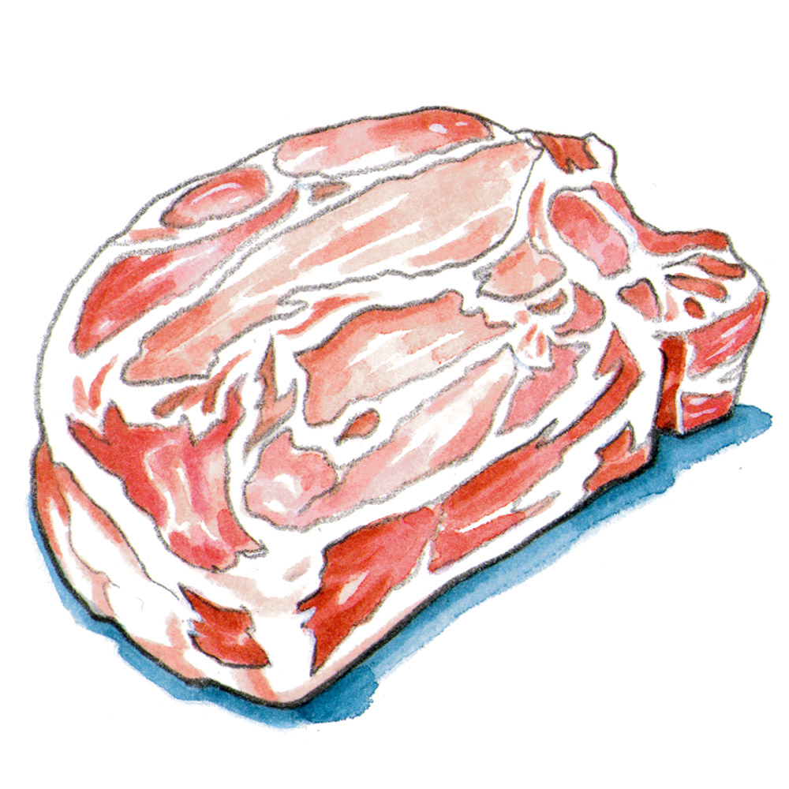Hand
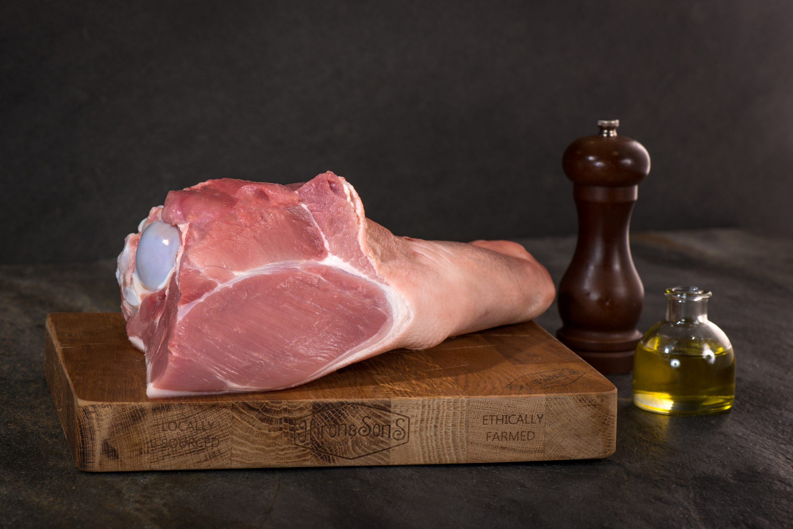Belly

Loin
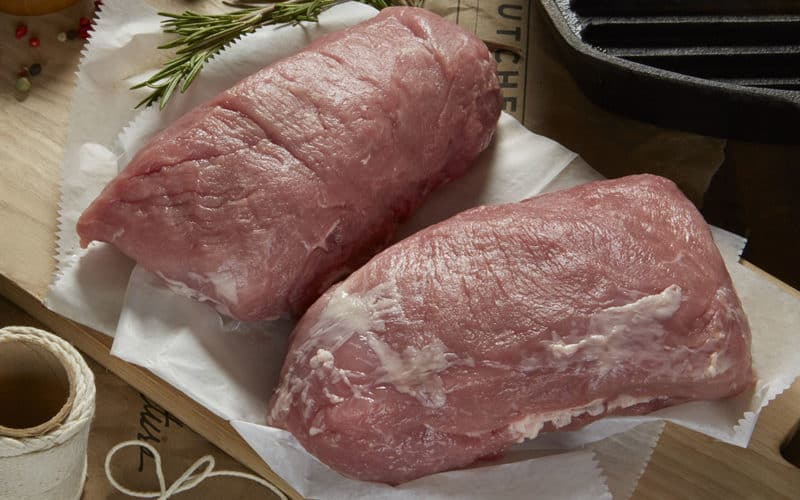Leg/Ham
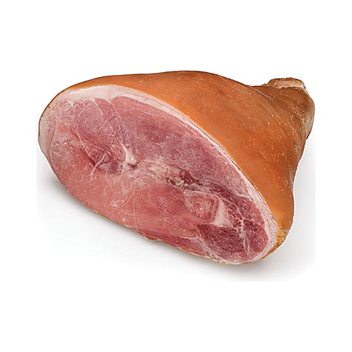Hocks
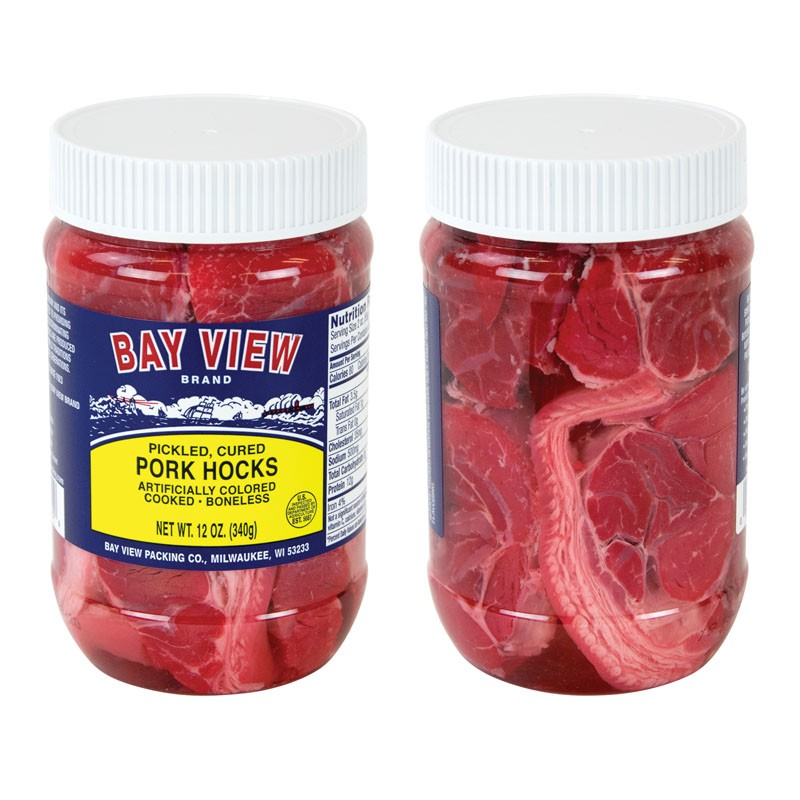Chuck
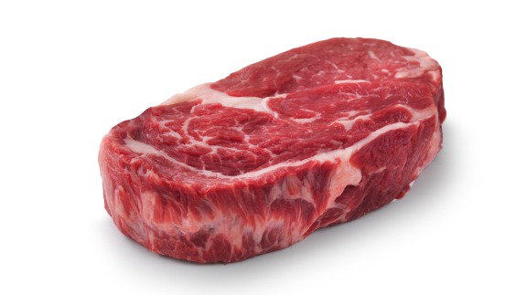Brisket
Rib
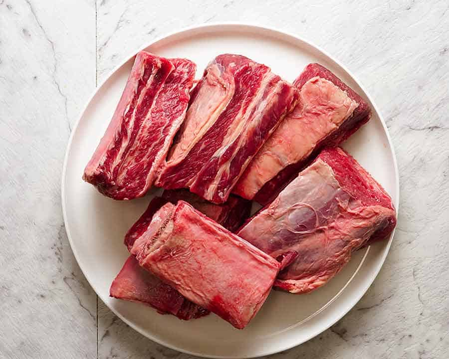Plate
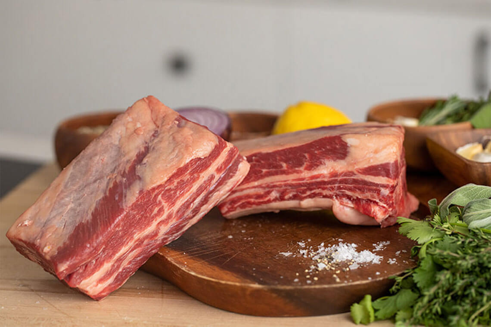Flank
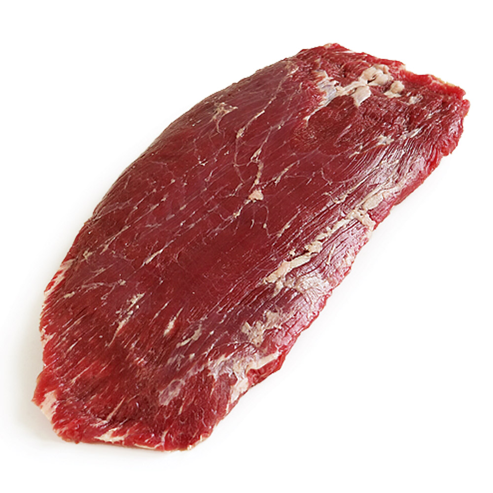Short Loin
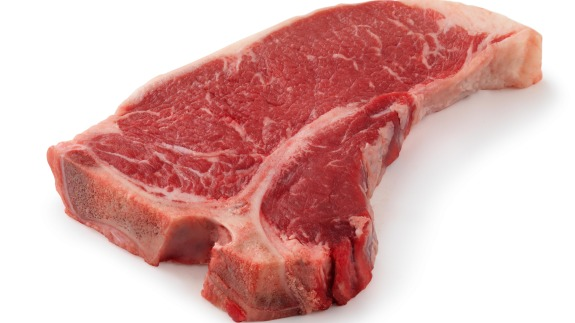Bottom Sirloin
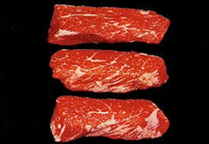Top Sirloin
_1184B.jpg)
Tenderloin
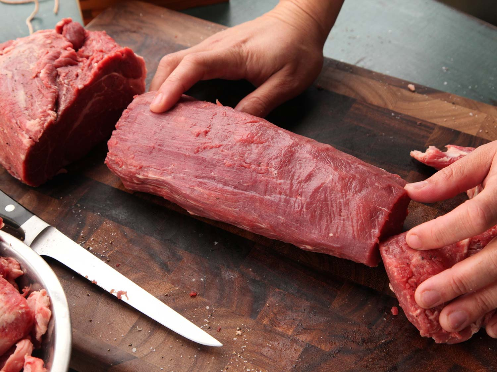Round
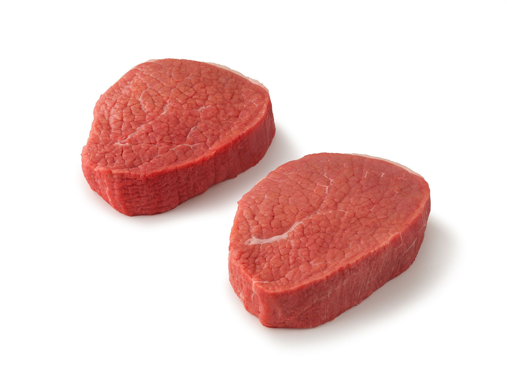Shank(Front leg)
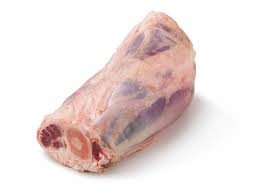Shank(Back leg
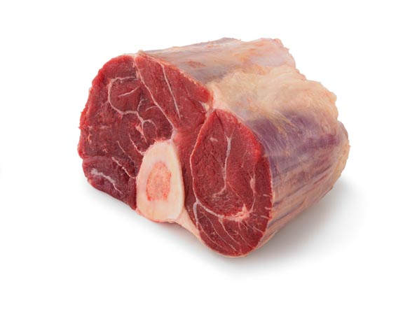